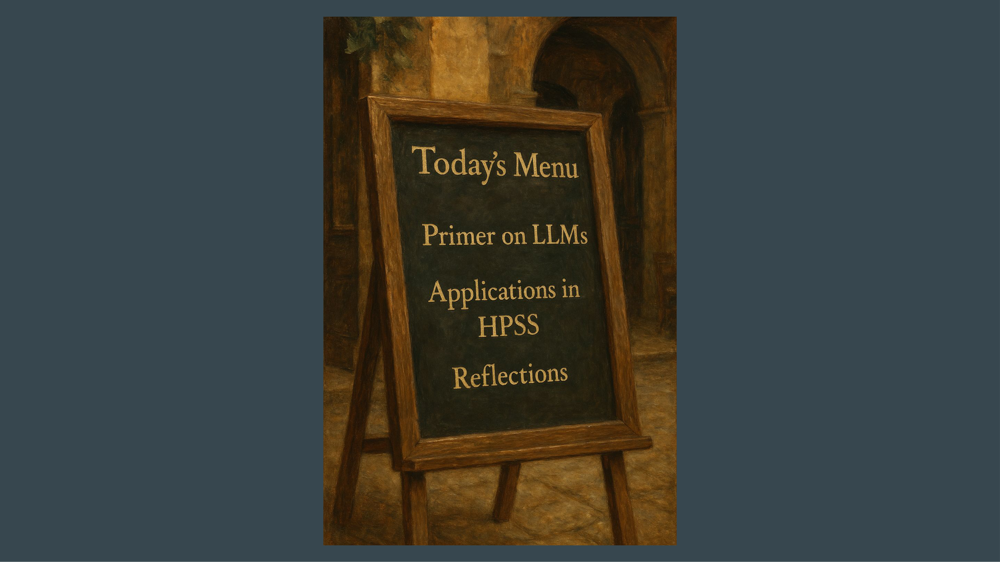

3 Large Language Models: Architecture, Adaptation, and Applications in HPSS
Overview
This chapter systematically explores the foundational architectures, adaptation strategies, and practical applications of Large Language Models (LLMs), with a particular emphasis on their utility within the History, Philosophy, and Sociology of Science (HPSS) domain. It commences with a primer on the Transformer architecture, detailing its encoder-decoder components and their evolution into distinct model types, such as BERT for understanding and GPT for generation. Subsequently, the discussion shifts to advanced adaptation techniques, including continued pre-training, fine-tuning, prompt-based methods, and contrastive learning, whilst introducing the Retrieval-Augmented Generation (RAG) pipeline as a sophisticated system for domain-specific information retrieval and synthesis. The chapter further outlines a survey of LLM applications in HPSS, categorising their use in data processing, knowledge structure analysis, dynamics, and practices. It concludes by addressing HPSS-specific challenges, such as historical language evolution and the need for critical interpretation, whilst advocating for enhanced LLM literacy, shared datasets, and a methodological fidelity to HPSS principles. Ultimately, this exploration highlights new opportunities for bridging qualitative and quantitative research paradigms.
3.1 Presentation Agenda and Core Topics

This presentation outlines a structured exploration of Large Language Models (LLMs) and their relevance to academic inquiry. Initially, it provides a concise primer on LLMs, specifically addressing their adaptation for various scientific domains. Subsequently, the discourse shifts to summarising current applications within the interdisciplinary fields of History, Philosophy, and Sociology of Science (HPSS). Finally, the presentation offers critical reflections, intended to stimulate further discussion throughout the workshop.
3.2 The Foundational Transformer Architecture

The Transformer architecture constitutes the fundamental framework for all contemporary Large Language Models (LLMs). Initially conceived in 2017 for language translation tasks, such as converting German to English, this model comprises two interconnected streams: an Encoder and a Decoder. The Encoder, typically positioned on the left, processes input words by transforming them into numerical representations. Crucially, it reads the entire input sentence simultaneously, enabling each word to interact with every other word, thereby constructing a comprehensive contextual understanding of the complete input. Conversely, the Decoder, situated on the right, generates output words from these encoded numerical representations. Each word produced is subsequently fed back into the system, forming a sequential generation process. Distinctively, words within the Decoder can only attend to their predecessors, not to future tokens, as their primary function involves predicting the subsequent word. Within both the Encoder and Decoder, various layers progressively refine and contextualise the word embeddings, as previously described. Following the seminal paper, researchers promptly re-engineered these individual streams, leading to the development of pre-trained language models.
3.3 Encoder-Based Models: BERT and Bidirectional Context

The field has transitioned from models designed solely for translation to those capable of profound language understanding and generation. These advanced models, with minimal or supplementary training, now serve a multitude of Natural Language Processing (NLP) tasks. Specifically, the Encoder component of the Transformer architecture evolved into models such as BERT, an acronym for Bidirectional Encoder Representations from Transformers. BERT models facilitate a ‘bidirectional full-context’ understanding; this implies that each word within the input stream can interact with every other word, thereby constructing a holistic comprehension of the entire input sequence concurrently. The term ‘bidirectional’ precisely denotes the capacity of these words to consider contextual information from both preceding and succeeding tokens.
3.4 BERT’s Bidirectional Processing and HPSS Applications

BERT, an acronym for Bidirectional Encoder Representations from Transformers, operates as an encoder-based model. It achieves a ‘bidirectional full-context’ understanding by processing linguistic input, converting words into numerical representations, and subsequently transforming these back into words. A defining characteristic of BERT lies in its capacity to comprehend context from both preceding and succeeding words within a sequence. The presentation explicitly raises the question of ‘LLMs for HPSS?’, thereby highlighting the prospective utility of Large Language Models, including BERT, within the domains of History, Philosophy, and Sociology of Science. This architectural innovation traces its foundational work to Devlin et al., published in 2018.
3.5 Generative Models: GPT and Unidirectional Generation

Distinct from BERT models, Generative Pre-trained Transformers (GPT) operate as decoder-based architectures, inherently constrained to processing only preceding tokens within a sequence. Crucially, GPT models possess the capacity to generate novel text, a functionality not intrinsically present in BERT models. These generative capabilities underpin widely adopted applications, including ChatGPT. Beyond these two primary architectural paradigms, the field encompasses models that integrate both encoder and decoder components, whilst others employ sophisticated decoder configurations to emulate encoder-like functionalities, exemplified by XLM, which builds upon XLNet. Fundamentally, the core distinction resides between generative models, primarily focused on language production, and full-context models, which excel at coherent sentence understanding.
3.6 Architectural Distinctions: BERT vs. GPT

BERT models, operating as encoder-only architectures, excel at bidirectional full-context understanding. Conversely, GPT models, which are decoder-only, specialise in unidirectional generative tasks. Both architectural paradigms originate from the seminal Transformer model. The presentation implicitly raises questions regarding their specific applicability and utility within the History, Philosophy, and Sociology of Science (HPSS) domain. The foundational research for BERT is credited to Devlin et al. (2018), whilst Radford et al. (2018) are recognised for their pioneering work on GPT.
3.7 Evolution of Scientific LLMs and Domain Adaptation

The contemporary landscape of Large Language Models (LLMs) tailored for scientific domains demonstrates considerable diversity and continuous evolution. Notably, encoder-type models, akin to BERT, exhibit a higher prevalence compared to decoder models, underscoring the significant research and development activity focused on the encoder side for scientific text comprehension. Early influential models in this domain include BioBERT, Specter, and Cyber. Presently, specialised LLMs cater to a broad spectrum of scientific disciplines, encompassing biomedicine, chemistry, material science, climate science, mathematics, physics, and social science. This comprehensive overview draws upon the survey conducted by Ho et al. (2024), which meticulously documents pre-trained language models designed for processing scientific texts.
3.8 Domain and Task Adaptation Strategies

Adapting Large Language Models (LLMs) to specific scientific language necessitates the employment of several distinct strategies. Initially, pre-training involves the model learning language by either predicting the subsequent token, as observed in GPT models, or by predicting randomly masked words, characteristic of BERT models. This foundational process, however, demands prohibitive computational resources and vast datasets, rendering it largely unfeasible for individual research efforts. Consequently, continued pre-training offers a more accessible alternative, wherein an existing pre-trained model undergoes further training on domain-specific language; for instance, a BERT model might be refined using physics-related texts, a methodology previously implemented by Micha and the presenter. Furthermore, fine-tuning entails augmenting pre-trained models with additional layers, which are then trained for specific classification tasks, such as sentiment analysis or named entity recognition. Prompt-based methods offer another avenue, framing tasks as natural language queries. Crucially, contrastive learning emerges as a pivotal technique for generating robust sentence or document embeddings, thereby enabling the placement of entire documents or sentences within the same semantic embedding space as individual words. Sentence BERT stands as a widely adopted example of this approach, with Irina Gurevich anticipated to elaborate on it. The slide visually reinforces these methods, depicting:
Pre-training with vocabulary adaptation for HPSS
The addition of extra parameters for sentiment and Named Entity Recognition (NER)
Prompt-based masked language modelling and definition elicitation
Contrastive learning through similarity scoring via pooling
3.9 Retrieval-Augmented Generation (RAG) and LLM Systems

Retrieval-Augmented Generation (RAG) represents a sophisticated pipeline that orchestrates multiple models in concert. This framework commonly underpins applications such as ChatGPT, which leverages internet searches to furnish comprehensive results. RAG facilitates the adaptation of models to specific domains without necessitating extensive re-training. The process commences with a BERT-type model, which assesses the similarity between a user’s query—for instance, ‘What are LLMs?’—and documents within a designated database, achieved by encoding the query into a sentence embedding. Subsequently, the system retrieves the most pertinent passages from these documents. These retrieved sentences are then seamlessly integrated into the prompt presented to a generative model. Consequently, the generative model formulates an answer, drawing upon this newly augmented context. Crucially, contemporary reasoning models or agents do not operate as singular Large Language Models; rather, they function as intricate systems, combining LLMs with a diverse array of other tools. Fundamental distinctions to bear in mind encompass:
The varying architectures—encoder, decoder, and encoder-decoder
The diverse fine-tuning strategies employed
The critical difference between word and sentence embeddings
The distinct levels of abstraction, ranging from standalone LLMs to complex pipelines and intelligent agents
3.10 Survey Findings on LLM Use in HPSS Research

A comprehensive survey is presently being conducted to evaluate the utilisation of Large Language Models (LLMs) as instrumental tools within History, Philosophy, and Sociology of Science (HPSS) research. This investigation has delineated four principal categories, or ‘bins’, for classifying LLM applications in the HPSS domain:
Dealing with data and sources: This encompasses methods for parsing and extracting specific elements, such as publication types, acknowledgements, and citations, alongside interactive engagements with sources through summarisation and Retrieval-Augmented Generation (RAG)-type chatting.
Knowledge structures: This addresses the identification of entities, including scientific instruments, celestial bodies, and chemical compounds, whilst also facilitating the mapping of intricate relationships between disciplines, interdisciplinary fields, and science policy discourses.
Knowledge dynamics: This delves into the evolution of concepts, exemplified by tracing the conceptual histories of terms like ‘theory’ in Digital Humanities or ‘virtual’ and ‘Planck’ in physics, concurrently with the detection of novelty, such as breakthrough papers and emerging technologies.
Knowledge practices: This examines analytical aspects of scholarly communication, including argument reconstruction to identify premises and causal relationships, citation context analysis to ascertain the purpose and sentiment of citations, and discourse analysis to uncover features like hedge sentences, disciplinary jargon, and boundary work.
A discernible trend indicates an accelerating interest in LLMs, with research findings primarily appearing in information science journals such as Scientometrics and Jasis. Notably, an increasing number of papers are now being published in journals traditionally not amenable to computational methods, signalling a burgeoning interest from qualitative researchers and philosophers, largely attributable to the profound semantic capabilities of these models.
3.11 Customisation Spectrum and Recurring Challenges

The customisation of Large Language Models (LLMs) spans a broad spectrum, ranging from the straightforward application of off-the-shelf tools like ChatGPT to the intricate development of entirely novel architectures. Nevertheless, several recurring concerns persistently challenge LLM implementation. These include the demanding requirements for computational resources, the inherent opaqueness of model operations, a pervasive scarcity of adequate training data, and the notable absence of standardised benchmarks. Furthermore, researchers consistently encounter fundamental trade-offs between distinct model types, such as BERT-like models optimised for understanding versus GPT-like models geared towards generation. Crucially, no singular model proves universally applicable; instead, the selection of an appropriate model remains contingent upon the specific research objective. Despite these challenges, a discernible trend towards enhanced accessibility is emerging, exemplified by tools like BERTTopic for topic modelling, which benefits from robust maintenance and user-friendly design.
3.12 Core Distinctions in Language Model Design

Understanding Large Language Models (LLMs) necessitates grasping several core distinctions in their design and application:
Firstly, models are categorised by their fundamental architecture and pre-training paradigm, encompassing encoder-based designs, exemplified by BERT for understanding tasks; decoder-based architectures, such as GPT for generative purposes; and integrated encoder-decoder models, like T5, which excel in sequence-to-sequence operations.
Secondly, fine-tuning involves employing diverse strategies to adapt these pre-trained models to specific downstream tasks, ranging from comprehensive fine-tuning to more parameter-efficient methods.
Thirdly, a critical differentiation exists between word embeddings, which represent individual lexical units, and sentence embeddings, which capture the semantic essence of entire sentences or longer textual segments, thus operating at distinct granularities.
Finally, the level of abstraction defines how LLMs integrate into broader computational systems, from functioning as standalone models to serving as components within multi-step pipelines or acting as intelligent agents capable of complex reasoning, planning, and interaction with external tools.
3.13 HPSS-Specific Challenges and Future Directions for LLMs

Research within the History, Philosophy, and Sociology of Science (HPSS) presents distinct challenges for the application of Large Language Models (LLMs). Foremost amongst these is the historical evolution of concepts and language; LLMs, predominantly trained on contemporary linguistic data, risk introducing biases and misinterpretations when applied to historical texts. Furthermore, HPSS scholars adopt a reconstructive and critically reflective perspective, interpreting scientific texts beyond their literal meaning to uncover situated contexts, authorial intentions, and subtle discursive strategies, such as boundary work—a nuanced interpretative capacity for which LLMs are not inherently trained. Practical data characteristics, including sparsity, multilingualism, and the presence of old scripts, also pose considerable impediments. In response to these challenges, several recommendations emerge for HPSS engagement with LLMs:
Researchers should cultivate LLM literacy, encompassing both a theoretical understanding and practical awareness of these tools’ implications, potentially involving the acquisition of coding skills, although Natural Language Processing (NLP)-based coding may mitigate this necessity.
Developing shared datasets and standardised benchmarks is crucial for rigorous evaluation and advancement.
Moreover, it remains imperative to maintain HPSS methodological fidelity, ensuring that the translation of HPSS problems into NLP tasks—such as classification, generation, or summarisation—does not inadvertently eclipse the core HPSS objectives.
Despite these hurdles, LLM integration presents novel opportunities. Notably, it offers a compelling avenue for bridging qualitative and quantitative research approaches. Additionally, it prompts a valuable reflection on HPSS’s own historical trajectory, drawing parallels with earlier computational methodologies like co-word analysis, pioneered by Callon and Rip in the 1980s, which were deeply rooted in Actor-Network Theory.